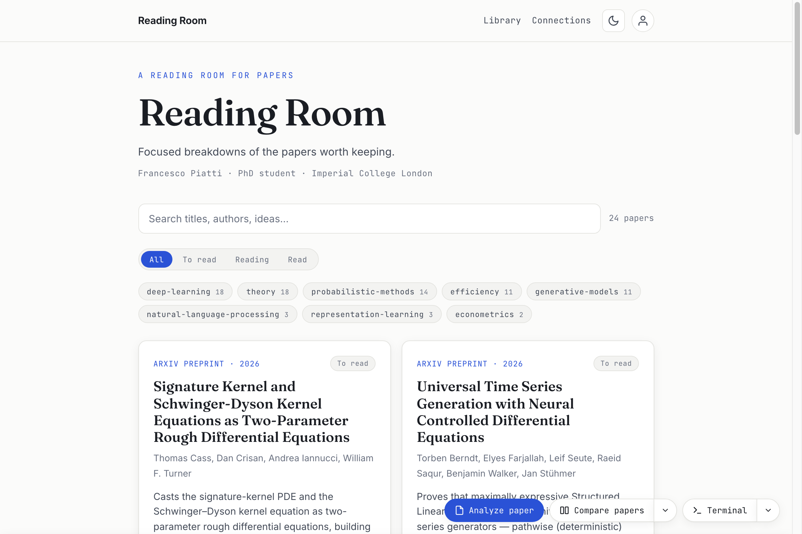
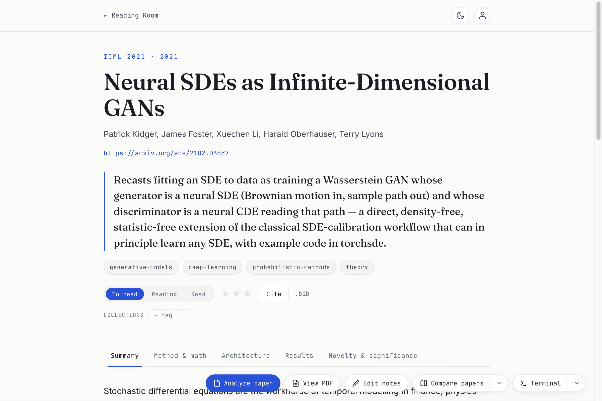
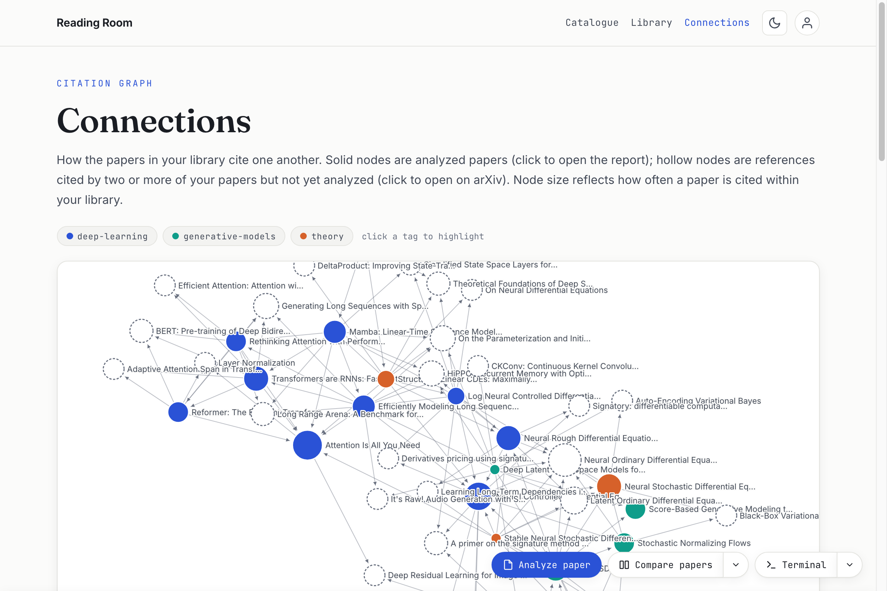
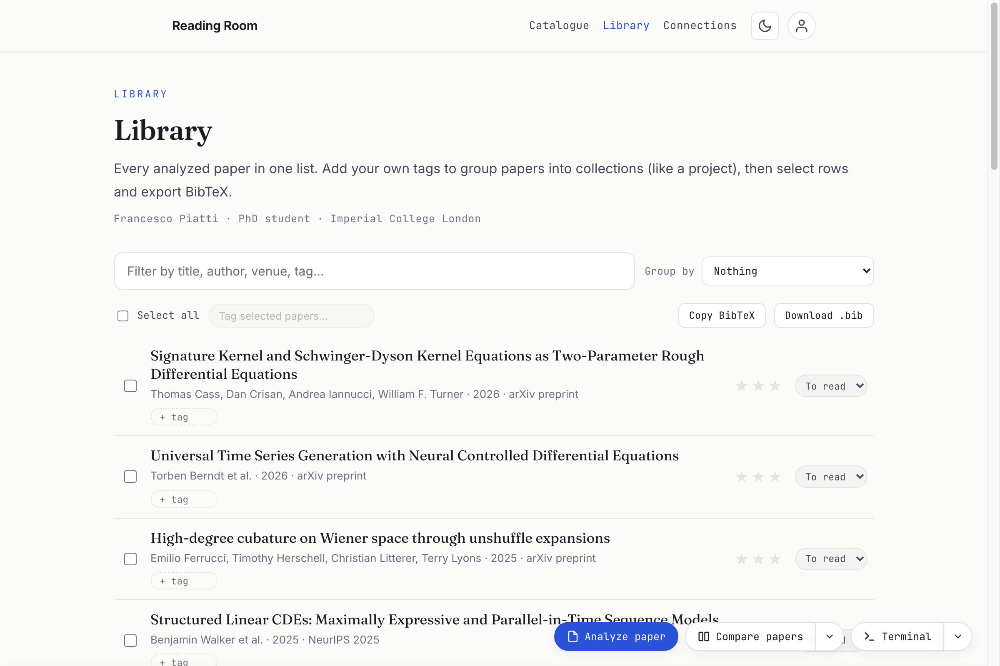
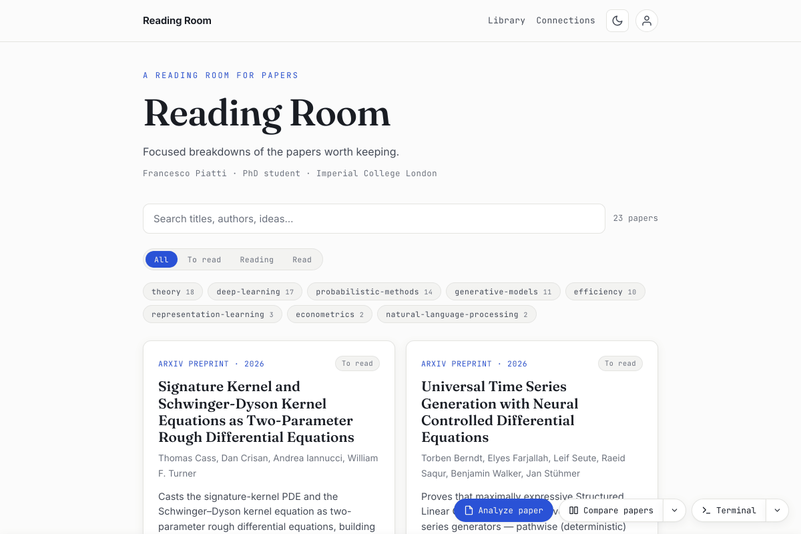

A reading room for papers
Read a paper once.
Keep the understanding.
Reading Room turns each paper into a focused, multi-tab breakdown tailored to your field, with the views you choose. Everything lives in a fast, searchable catalogue you own. Written by your own AI coding assistant (Claude Code, Codex CLI, or Gemini CLI) under the subscription you already have — no API key, no API billing, no lock-in.

A catalogue, not a folder of PDFs
Every paper you read becomes a self-contained page with the focus views as tabs and live equations — and joins a catalogue you can search, filter, and connect. It builds to plain HTML you can open offline or host free on GitHub Pages.
Focused, multi-tab reports
The focus views you choose — math, methods, results, significance, … — each its own tab with LaTeX via MathJax, adapted to each paper (Summary and Significance always written).
Searchable catalogue
Instant client-side search, a controlled set of tags, and per-paper reading status & priority that persist in your browser.
Connections graph
A force-directed map of how your papers cite each other, with ghost nodes suggesting key references you haven't analyzed yet.
Reference library
A grouped reference list with one-click BibTeX export — preprints get cleaned up to their published venue when one exists.
Side-by-side comparisons
Put 2–3 papers next to each other on the dimensions that actually differentiate them — core idea, complexity, results, limitations. Or ask a question, and the whole comparison is organised around answering it.
Deep dives & discussions
Go a level lower on one idea — a full proof or derivation — as its own tab or merged into a section. Or discuss a paper interactively and save the compacted chat as a Discussion.
It's an app
Double-click to launch — macOS, Windows or Linux. Analyze, Compare, Discuss and Deep dive are buttons — your assistant runs behind them and the new report appears the moment it's done. Queue a stack of papers, stop a run, back up everything to one zip, or install an update, all from the same window.
No API key needed
Reports are written by your own AI coding assistant — Claude Code, Codex CLI, or Gemini CLI — under the subscription you already have. No API billing, no key; nothing leaves your machine except the assistant's own traffic, a version check against GitHub on launch (no library data is sent), arXiv when you open a PDF, and MathJax's CDN for equations. The output is plain HTML, and it's yours.
Adapts to your field
Setup seeds a tag vocabulary and the focus-view tabs for your discipline — add your own — and every report is pitched to your profile and split into the topics that fit that paper. Papers come from an arXiv id, a link, or a PDF you drop on the window, so a paywalled or offline-only paper is no different from a preprint.
The reasoning, not just the result
Each report goes deep on your field's own core. Where a paper has central equations, they are rendered as real LaTeX together with the definitions and the logic that connect them; where it doesn't, the report works through the methods, the experimental design and the statistics instead. Headline numbers land in clean results tables, and a "novelty & significance" tab gives you an honest read on what's new, what it rests on, and where it might fail.
Tabs switch instantly; equations and tables are selectable, copyable text.

See how the ideas link up
The catalogue isn't a flat list — it's a graph. Solid nodes are papers you've analyzed; hollow "ghost" nodes are important references cited by two or more of your papers but not yet read. Click one to read it into your library, or dismiss it for good.
Node size reflects how often a paper is cited within your library.

Citations, sorted out
A reference-library view groups your papers and exports BibTeX with one click. Keep the arXiv link for reading, but cite the published conference or journal entry — Reading Room checks DBLP and updates preprints that have since appeared.

See it in motion
The one-click Analyze flow, start to finish:
